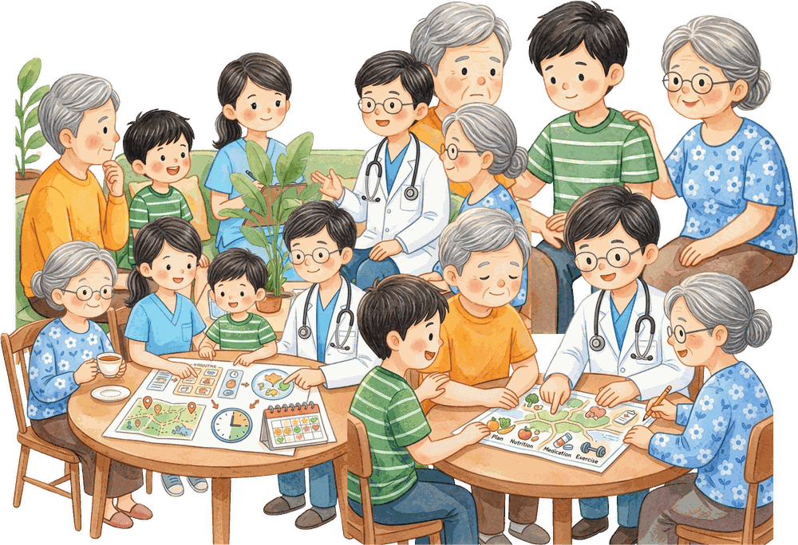
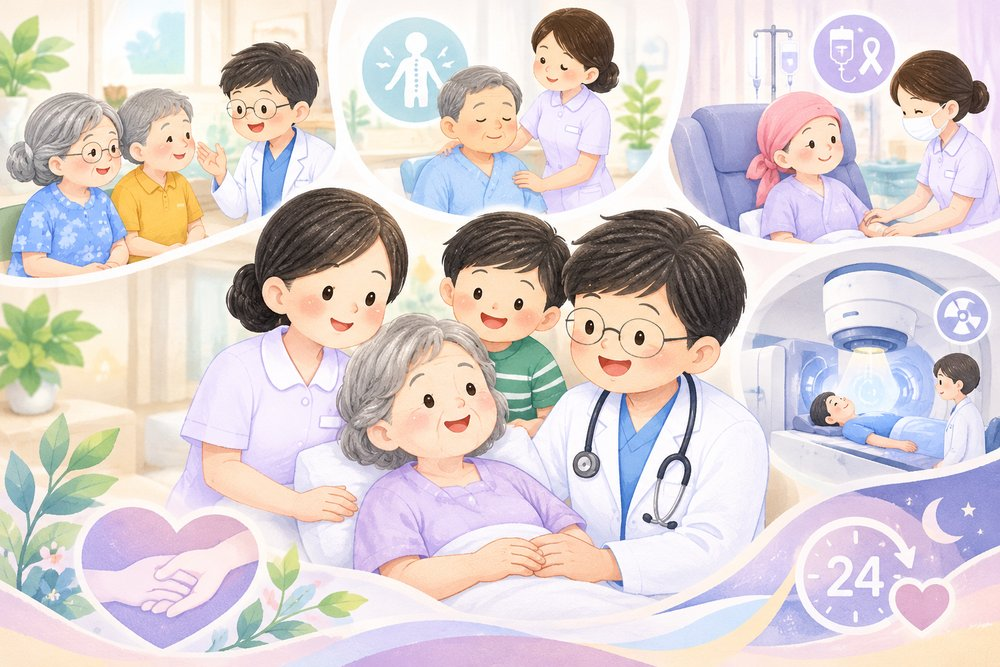
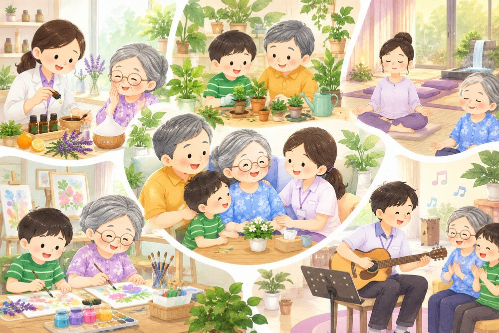

เกี่ยวกับ Siriraj Home Palliative Care
Siriraj Home Palliative Care เป็นแนวทางการดูแลผู้ป่วยแบบประคับประคองที่มุ่งเน้นการส่งเสริมคุณภาพชีวิตของผู้ป่วยและครอบครัว โดยให้ความสำคัญกับการบรรเทาความเจ็บปวดและอาการไม่สุขสบาย ควบคู่ไปกับการดูแลด้านจิตใจ สังคม และจิตวิญญาณ เพื่อให้ผู้ป่วยได้รับการดูแลอย่างเหมาะสม สอดคล้องกับความต้องการและคุณค่าของชีวิตแต่ละบุคคล
การดูแลแบบประคับประคองไม่ได้มุ่งเน้นเพียงการรักษาอาการทางร่างกายเท่านั้น แต่ยังให้ความสำคัญกับการรับฟังความรู้สึก การทำความเข้าใจความต้องการของผู้ป่วย ตลอดจนการให้คำแนะนำและสนับสนุนครอบครัวในการดูแลคนที่รักอย่างมั่นใจและเข้าใจมากยิ่งขึ้น
ภายใต้แนวทางการดูแลของคณะแพทยศาสตร์ศิริราชพยาบาล มหาวิทยาลัยมหิดล เรามุ่งหวังที่จะเป็นส่วนหนึ่งในการเชื่อมโยงการดูแลทางการแพทย์เข้ากับชีวิตประจำวัน เพื่อให้ผู้ป่วยและครอบครัวได้รับการดูแลอย่างต่อเนื่อง ด้วยความเข้าใจ ความเคารพในศักดิ์ศรีความเป็นมนุษย์ และความเอาใจใส่ในทุกช่วงเวลาที่สำคัญของชีวิต
บริการ

ชื่อบริการ 1
รอเนื้อหาจริงจากทีม
ชื่อบริการ 2
รอเนื้อหาจริงจากทีม

ชื่อบริการ 3
รอเนื้อหาจริงจากทีม
🌸 เพราะการดูแลที่ดี ไม่ใช่เพียงการรักษา แต่คือการอยู่เคียงข้างกัน 🌸